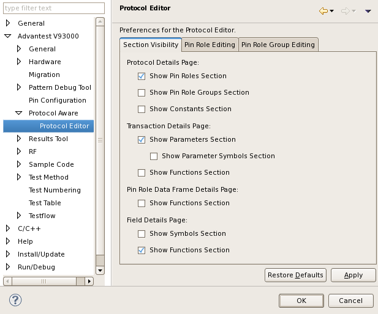

Protocol Editor preference page
Open the Advantest V93000 > Protocol Aware > Protocol Editor preference page.

The preferences are grouped in Section Visibility, Pin Role Editing and Pin Role Group Editing. Each of the tabs has separate sections.
The following tables list all options available per tab:
Section Visibility tab
Option |
Description |
|---|---|
Show Pin Roles Section |
Shows the expanded pin roles table in the protocol details area of the protocol editor. The default setting is: enabled |
Show Pin Role Group Section |
Shows the expanded pin roles groups table in the protocol details area of the protocol editor. The default setting is: disabled |
Show Constant Section |
Shows the expanded constant table in the protocol details area of the protocol editor. The default setting is: disabled |
Show Parameter Section |
Shows the expanded parameter table in the protocol details area of the protocol editor. The default setting is: enabled |
Show Parameter Symbols Section |
Shows the expanded parameter symbols table in the protocol details area of the protocol editor. The default setting is: disabled |
Show Functions Section |
Shows the expanded function section in the transaction details, pin role details and field details areas of the protocol editor. The default setting is: disabled for transaction and pin role details enabled for field details |
Show Symbols Section |
Shows the expanded symbols table in the protocol details area of the protocol editor. The default setting is: enabled |
Pin Role Editing tab
Option |
Description |
|---|---|
Delete pin role in all transactions and groups |
Deletes a pin role in all transaction and all pin role groups automatically. The default setting is: enabled |
Add the pin role to all transactions |
Adds a pin role to all transactions automatically. The default setting is: enabled |
Rename the pin role in all transactions and groups |
Renames all pin roles in all transactions and all groups automatically. The default setting is: enabled |
Pin Role Group Editing tab
Option |
Description |
|---|---|
Delete the pin role group in all transactions |
Deletes a pin role group in all transaction automatically. The default setting is: enabled |
Rename the pin role group in all transactions |
Renames pin role group in all transactions automatically. The default setting is: enabled |
Functional changes
- Introduced in SmarTest 7.1.0